▲ 한국 사양 팰리세이드 하이브리드 익스클루시브(파일 설명 기준, 2025년 8월 촬영, 번호판은 원본에서 가려져 있다) ⓒ Damian B Oh / Wikimedia Commons (CC BY-SA 4.0)
"현대차가 또 워즈오토 상을 받았다는데, 그래서 내가 살 팰리세이드 하이브리드는 뭐가 좋다는 거지?" 수상 소식은 "334마력, 14.1km/L"로 요약되지만, 계약서에 적히는 숫자는 휠과 구동 방식에 따라 달라진다. 이 글은 2026년 10월 23일 확인한 현대차 공식 카탈로그·가격표로 그 차이를 풀어 보고, 워즈오토가 무엇을 보고 뽑았는지부터 짚는다.
소재는 모터그래프(2026년 10월 23일 보도)가 전한 현대차 발표이며, 수상 목록과 심사 방식은 워즈오토 원문으로, 제원과 가격은 현대차 공식 자료로 다시 확인했다. 확인하지 못한 항목은 끝에 따로 적었다.
1. 워즈오토 10대 엔진은 어떻게 뽑나 — 판매량이 아니라 파워트레인 평가다
미국에서 판매되는 신형·개선 파워트레인을 워즈오토 편집진이 직접 몰아 점수를 매겨 10개를 고르는 상이다. 순위는 없고 뽑힌 10개는 동등하다. 제조사 매출이나 소비자 만족도가 아니라 엔진·구동계 자체에 대한 평가라는 점이 출발점이다.
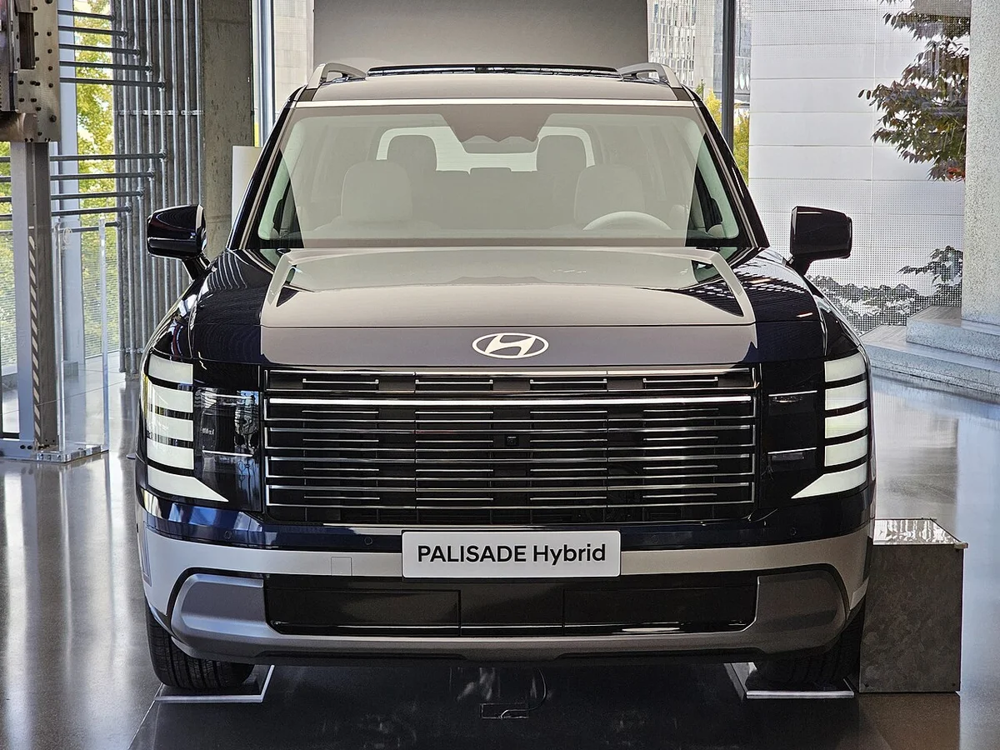
▲ 전시장의 팰리세이드 하이브리드 전면(파일 설명상 프레스티지 HTRAC, 2025년 10월 촬영) ⓒ Damian B Oh / Wikimedia Commons (CC BY-SA 4.0)
- 대상: 올해는 26개 후보가 평가를 받았다. 워즈오토 원문은 신형이거나 크게 개선된 파워트레인, 그리고 직전 해 수상작을 대상으로 한다고 설명한다.
- 평가 항목: 출력, 토크, 소음·진동·불쾌감(NVH) 관리, 실측 효율, 혁신 기술이다. 심사는 실제 주행으로 점수를 매기고, 심사위원이 점수를 모아 논의한다. 기준 질문은 "이 파워트레인이 그 차를 파는 데 도움이 되는가"다.
- 가격 상한: 올해 원문에는 상한이 적혀 있지 않다. 수상 차량의 가격은 4만 3,035달러에서 24만 2,060달러까지 걸쳐 있다(워즈오토).
- 후보 수 추이: 현대차그룹 보도자료의 평가 대상 수는 2024년 34개, 2025년 28개, 올해 26개로 해마다 줄었다(카프리즘 정리).
심사 방식 세부(작년 후보 발표 기사 기준)로는 트랙이 아니라 디트로이트 일대 일반 도로에서 시험하고, 연비·출력·토크 같은 기본 수치를 본다고 설명돼 있다. 올해 규칙이 같은지는 따로 확인하지 못했다. 이런 방식이라 "승차감이 좋다", "3열이 넓다" 같은 차량 전체 평가가 아니라는 점은 뒤의 주의할 점에서 다시 다룬다.
워즈오토 2026 수상 발표 바로가기에서 수상 목록과 심사위원 코멘트를 원문으로 볼 수 있다.
2. 올해 10자리 중 팰리세이드는 어디 — 하이브리드 4곳 중 하나, 내연기관 단독은 0
팰리세이드 하이브리드는 하이브리드 4자리 중 하나이고, 현대차그룹에서는 유일한 수상작이다. 10개 목록에 현대차그룹의 다른 차종은 없다. 작년 수상작인 아이오닉 9도 올해 목록에는 들어 있지 않다(워즈오토 수상 목록 기준).
| 구분 | 수상 파워트레인 |
|---|---|
| 순수 전기(4) | 메르세데스-벤츠 GLC 400 4Matic 일렉트릭, 리비안 R2 퍼포먼스, 스바루 트레일시커, 볼보 EX60 P10 AWD(모두 듀얼 모터) |
| 하이브리드(4) | 쉐보레 콜벳 ZR1X(5.5ℓ 터보 V8), 현대 팰리세이드 하이브리드(2.5ℓ 터보 4기통), 닛산 로그 하이브리드(1.5ℓ 터보 3기통), 포르쉐 911 카레라 GTS T-하이브리드(3.6ℓ 플랫6) |
| 플러그인 하이브리드(2) | BMW M5 투어링(4.4ℓ 터보 V8), 토요타 RAV4 PHEV GR 스포트(2.5ℓ 4기통) |
같은 하이브리드 칸의 나머지 셋이 8기통 슈퍼카, 플랫6 스포츠카, 1.5ℓ 3기통 컴팩트 SUV라서, 팰리세이드는 "2.5ℓ 4기통으로 대형 3열 SUV를 끄는" 쓰임새가 가장 가족차에 가깝다. 이 비교는 카프리즘의 해석이며 워즈오토가 이 기준으로 묶은 것은 아니다.
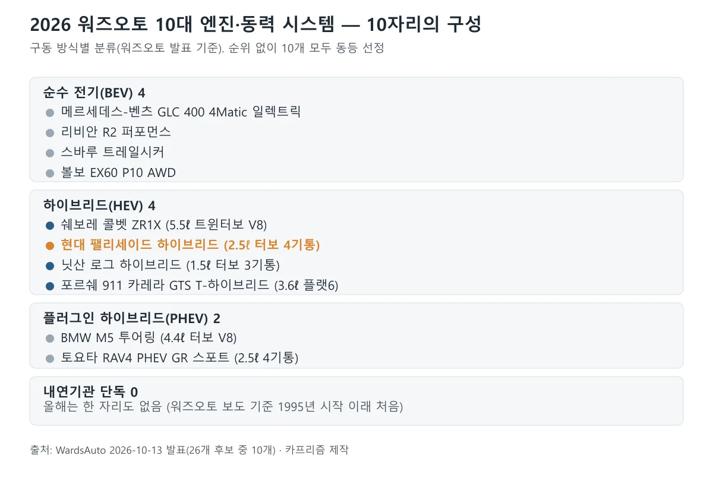
▲ 올해 10자리는 전동화 시스템뿐이다. 팰리세이드는 주황색으로 표시 카프리즘 제작(워즈오토 발표)
워즈오토 원문은 "프로그램이 시작된 이래 처음으로 내연기관만으로 움직이는 수상작이 하나도 없다"고 직접 밝혔고, 카프로(CarPro)도 "32년 역사에서 처음"이라고 전했다. 이 "처음"은 워즈오토 스스로의 서술이므로 카프리즘이 과거 목록을 모두 대조하지 못했더라도 출처는 1차 자료다. 다만 원문 안에서 시작 연도(1995년)와 32년이라는 햇수 표기가 완전히 맞지는 않는다.
3. 현대차그룹 20번째 수상 — 4년 연속 전기차 뒤에 온 하이브리드
현대차그룹은 2008년 1세대 제네시스 4.6ℓ 타우 엔진을 시작으로 이번이 20번째라고 밝혔다. 전기차가 4년 연속이었다가 올해 처음 하이브리드가 이름을 올렸다는 점이 눈에 띈다.
| 연도 | 차종·파워트레인 | 카프리즘 분류 |
|---|---|---|
| 2008~2010 | 제네시스(BH) 4.6ℓ·4.6ℓ·5.0ℓ 타우 V8 | 내연기관 |
| 2011 | 엑센트 1.6ℓ 감마 | 내연기관 |
| 2014 | 투싼 FCEV 100kW 수소전기 | 수소전기 |
| 2015 | 쏘나타 PHEV 2.0ℓ 누우+PHEV 시스템 | 하이브리드·PHEV |
| 2016~2017 | 아반떼 1.4ℓ 감마 터보, 기아 스팅어 3.3ℓ 트윈터보 V6 | 내연기관 |
| 2018 | 넥쏘 113kW 수소전기, 코나 일렉트릭 | 수소전기·전기 |
| 2019 | 쏘나타 스마트스트림 1.6 터보, 코나 일렉트릭 | 내연기관·전기 |
| 2021 | 싼타페 2.5ℓ 터보, 코나 일렉트릭 | 내연기관·전기 |
| 2022~2025 | 아이오닉 5, 아이오닉 6, 아이오닉 5 N·기아 EV9, 아이오닉 9 | 전기(4년 연속) |
| 2026 | 팰리세이드 하이브리드 2.5 터보 하이브리드 | 하이브리드 |
같은 해에 두 건이 겹친 해(2018·2019·2021·2024)가 있어 수상 건수는 연도 수보다 많다. 표 속 20건을 카프리즘이 분류하면 내연기관 8, 순수 전기 8, 수소전기 2, 하이브리드·PHEV 2건이다.
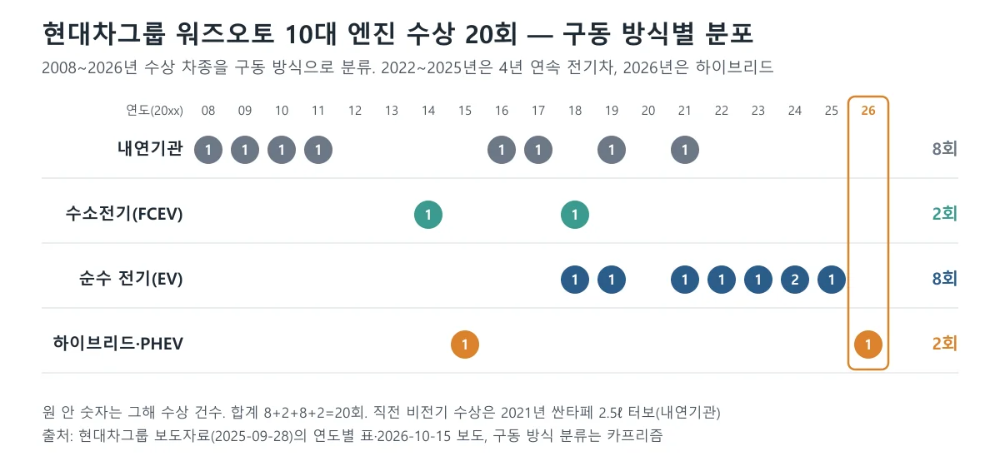
▲ 2022~2025년 전기차가 이어지다 2026년에 하이브리드가 들어왔다 카프리즘 제작(현대차그룹 보도자료)
직전의 비전기 수상은 2021년 싼타페 2.5ℓ 터보이므로 5년 만이다. 이 표의 연도는 현대차그룹 보도자료 표기를 따랐다. 워즈오토 수상 목록을 정리한 위키백과와 건수를 맞춰 보니 아이오닉 9을 제외한 현대차그룹 수상작 18건이 확인됐고 올해 1건을 더하면 20건으로 현대차그룹 집계와 맞는다.
다만 연도 표기는 달라서, 위키백과는 제네시스 4.6ℓ를 2009·2010년, 제네시스 5.0ℓ를 2011년, 엑센트를 2012년, 투싼 FCEV를 2015년, 쏘나타 PHEV를 2016년, 아반떼를 2017년, 스팅어를 2018년, 넥쏘를 2019년, 쏘나타 1.6 터보를 2020년으로 현대차그룹 표보다 한 해씩 늦게 적었고 코나 일렉트릭은 2019·2020·2021년(현대차그룹 표는 2018·2019·2021년)으로 적었다. 2021년 이후(싼타페·아이오닉 5·6·5 N·EV9)는 두 자료가 같다. 표기 연도 차이의 이유는 확인하지 못했다.
4. 334PS는 어떻게 나오나 — 공식 제원을 가솔린과 나란히 놓으면
하이브리드의 시스템 최고출력은 334PS로 가솔린 2.5 터보(281PS)보다 53PS 높지만, 엔진 자체는 오히려 19PS 낮다. 모터가 그 차이를 메우고도 남는 구조다.
| 항목 | 2.5 터보 하이브리드 | 2.5 터보 가솔린 |
|---|---|---|
| 엔진 최고출력 | 262PS / 5,800rpm | 281PS / 5,800rpm |
| 엔진 최대토크 | 36.0kgf·m / 1,800~4,500rpm | 43.0kgf·m / 1,700~4,000rpm |
| 모터 | 54.0kW, 264Nm(~1,900rpm) | 없음 |
| 시스템 최고출력 | 334PS | 281PS(엔진 단독) |
| 변속기 | 자동 6단 | 자동 8단 |
| 공차중량 | 2,080kg | 1,985kg |
| 연료탱크 | 72ℓ | 72ℓ |
모터 54.0kW는 약 73PS(1kW≈1.36PS, 카프리즘 환산)이고, 엔진 262PS와 단순 합산하면 약 335PS로 공표된 시스템 출력 334PS와 거의 맞는다. 엔진 최대토크가 가솔린보다 낮은 대신 모터가 저속 토크를 받치는 구조이며, 실제 가속 성능은 이 표만으로 판단할 수 없다.
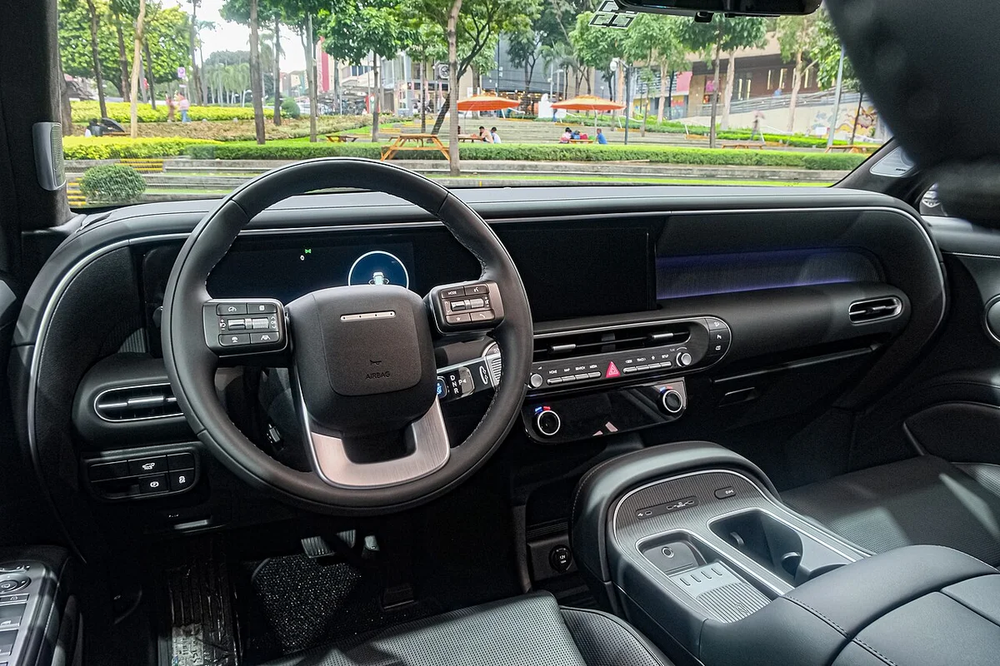
▲ 팰리세이드 하이브리드 캘리그래피 실내(2025년 9월 촬영, 파일 설명상 2.5T HEV) ⓒ Ethan Llamas / Wikimedia Commons (CC BY-SA 4.0)
현대차 발표에는 두 개의 모터가 내장된 신규 변속기, 1.65kWh·300V 리튬이온 배터리, 실내 V2L과 스테이 모드 같은 항목이 함께 소개됐고, 오토뷰는 주행 기능으로 E-라이드·E-핸들링 등을 언급했다. 하이브리드 전용 부품은 10년·20만km 무상 보증이 카탈로그에 표기돼 있다. 국내 카탈로그에는 시스템 합산 토크와 배터리 출력(kW)이 적혀 있지 않다. 참고로 현대차 미국법인 발표(스톡타이탄 재게재)는 같은 파워트레인을 329hp·합산 339lb-ft로 소개했는데, 334PS가 약 329hp이고 339lb-ft는 약 46.9kgf·m로 환산되므로 같은 시스템의 단위만 다른 값으로 보인다(카프리즘 환산, 국내 공식 수치는 아니다).
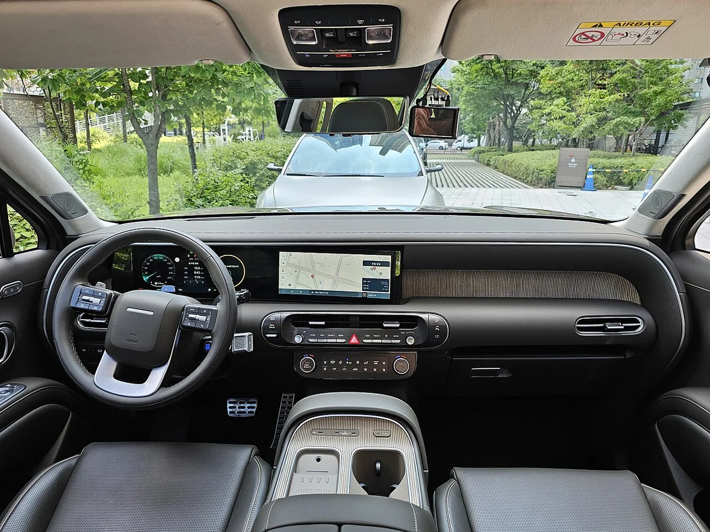
▲ 팰리세이드 하이브리드 캘리그래피 실내(파일 설명상 다크 차콜 원톤·브라운 스티치, 2025년 8월 촬영) ⓒ Damian B Oh / Wikimedia Commons (CC BY-SA 4.0)
5. 14.1km/L는 한 구성뿐 — 휠과 구동 방식에 따른 6가지 연비
복합연비 14.1km/L는 2WD·18인치·빌트인 캠 미적용일 때만 해당하고, 21인치 AWD는 11.4km/L까지 내려간다. 수상 소식의 숫자가 그대로 모든 차에 적용되지 않는다는 뜻이다.
| 구성 | 하이브리드 | 가솔린 2.5 터보 | 하이브리드 우위 | 하이브리드 연 연료비* |
|---|---|---|---|---|
| 2WD 18인치 | 14.1(빌트인 캠 적용 13.9) | 9.7 | +45% | 180.9만 원 |
| 2WD 20인치 | 12.7 | 9.0 | +41% | 200.8만 원 |
| 2WD 21인치 | 12.5 | 8.7 | +44% | 204.0만 원 |
| AWD 18인치 | 12.5 | 8.7 | +44% | 204.0만 원 |
| AWD 20인치 | 11.4 | 8.2 | +39% | 223.7만 원 |
| AWD 21인치 | 11.4 | 8.2 | +39% | 223.7만 원 |
*연 1만 5,000km, 휘발유 1,700원/L 가정(카프리즘 계산, 보험·정비·세금 제외). 가솔린 AWD 18인치는 7인승 8.7km/L, 9인승 8.6km/L다. 휠이 커지면 구름저항이 늘고 AWD는 구동계 손실이 더해져 연비가 떨어진다는 것이 일반적인 설명이며, 현대차 카탈로그는 이 이유를 따로 밝히지 않는다.
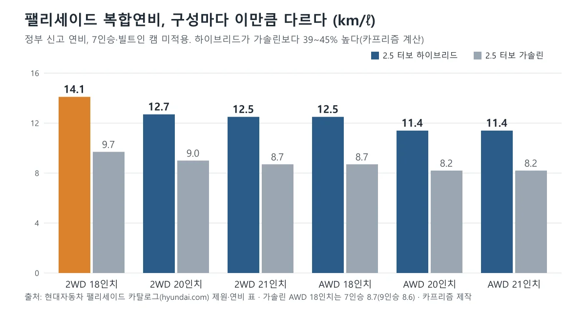
▲ 하이브리드는 어느 구성에서나 가솔린보다 39~45% 높지만 구성끼리의 차이도 2.7km/L다 카프리즘 제작(현대차 카탈로그)
가장 효율이 좋은 구성(14.1)과 가장 낮은 구성(11.4)의 연료비 차이는 연 약 42.8만 원이다. 빌트인 캠 2 Plus 선택 시 14.1이 13.9로 내려가는데, 연료비로는 연 2.6만 원 정도다. 가격표 각주에 따르면 하이루프 AWD(21인치)는 11.2km/L이고 하이루프 2WD 수치는 정부 신고 절차 뒤에 공개될 예정이다. 시승기 쪽 실연비와 공인 연비의 차이는 시승기 15편 종합 기사에서 따로 정리했다.
6. 2027 하이브리드 가격표 — 5,077만 원부터 8,159만 원, HTRAC의 함정
하이브리드는 9인승 익스클루시브 5,077만 원부터이고, 7인승 익스클루시브는 세제혜택 후 5,140만 원이다. 상위 트림과 하이루프는 7인승과 9인승의 가격 차이가 훨씬 크다.
| 트림 | 7인승 | 9인승 | 7인승−9인승 |
|---|---|---|---|
| 익스클루시브 | 5,240(세제혜택 후 5,140) | 5,077 | 163(후 기준 63) |
| H-Pick | 5,832 | 5,640 | 192 |
| 캘리그래피 | 6,436 | 6,206 | 230 |
| 블랙 잉크 | 6,606 | 6,367 | 239 |
| 하이루프 | 8,159 | 7,844 | 315 |
9인승 가격표에는 세제혜택 전·후 열이 없고 단일 가격만 있는데, 현대차 카탈로그가 9인승의 세제 혜택으로 업무용 구매 시 부가가치세 환급, 18세 미만 자녀 2명 이상일 때 취득세·등록세 감면, 개별소비세 면제를 안내하고 있다. 현대차 가격표는 세제혜택 후 가격이 환경친화적 자동차 기준을 충족한다는 전제의 대략적인 값이며 충족 여부에 따라 달라질 수 있다고 적었고, 연비 각주에는 하이브리드 익스클루시브(2WD) 7·9인승이 요건을 만족한다고 밝혔다. 7인승 상위 트림의 가격표에는 세제혜택 후 가격이 따로 적혀 있지 않았고, 7인승과 9인승의 차액이 어디서 생기는지는 가격표에서 확인하지 못했다. 세율 문구가 가격표에 없다는 점은 같은 값 3열 SUV 비교 기사에서도 같은 한계로 적었다.
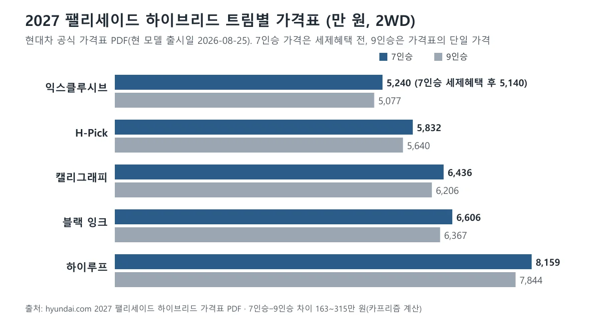
▲ 7인승과 9인승의 차이는 163만~315만 원(세제혜택 전 가격 기준) 카프리즘 제작(현대차 가격표)
⚠️ 가격표 문구: 익스클루시브에서 HTRAC을 고르면
7인승 가격표는 "HTRAC, 험로주행모드 240만 원"에 대해 "익스클루시브 트림에서 HTRAC 선택 시 환경친화적 자동차 요건을 만족하지 않습니다(세제혜택 미적용)"라고 적고 있다. 7인승 익스클루시브에 HTRAC을 더하면 5,240+240=5,480만 원이고, 세제혜택 후 기본가 5,140만 원과의 차이는 340만 원이다(카프리즘 계산). 9인승(HTRAC 228만 원) 가격표에도 같은 경고 문구가 있으나 세제혜택 열이 없어 가격 영향은 확인하지 못했다.
현대차 팰리세이드 하이브리드 가격표 바로가기에서 트림·옵션별 최신 가격을 직접 확인할 수 있다.
가솔린과의 차이는 9인승 익스클루시브가 4,478만 원 대 5,077만 원으로 599만 원, 7인승은 4,610만 원 대 5,140만 원(세제혜택 후)으로 530만 원이다. 이 추가금을 연료비로 몇 년에 회수하는지는 시승기 종합 기사에서 계산했고, 9인승 할인 흐름은 9월 9인승 가격 인하 기사에서, 하이루프의 지하주차장 문제는 하이루프 인증 기사에서 볼 수 있다.
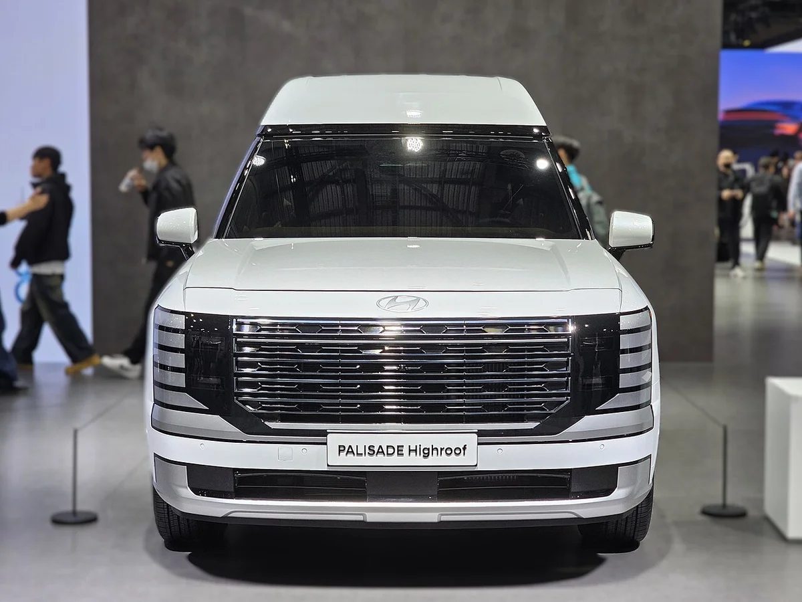
▲ 팰리세이드 하이루프 전면. 2025년 4월 서울모빌리티쇼 전시차이며 파워트레인 표기는 파일 설명에 없다(관람객 얼굴 일부가 보인다) ⓒ Damian B Oh / Wikimedia Commons (CC BY-SA 4.0)
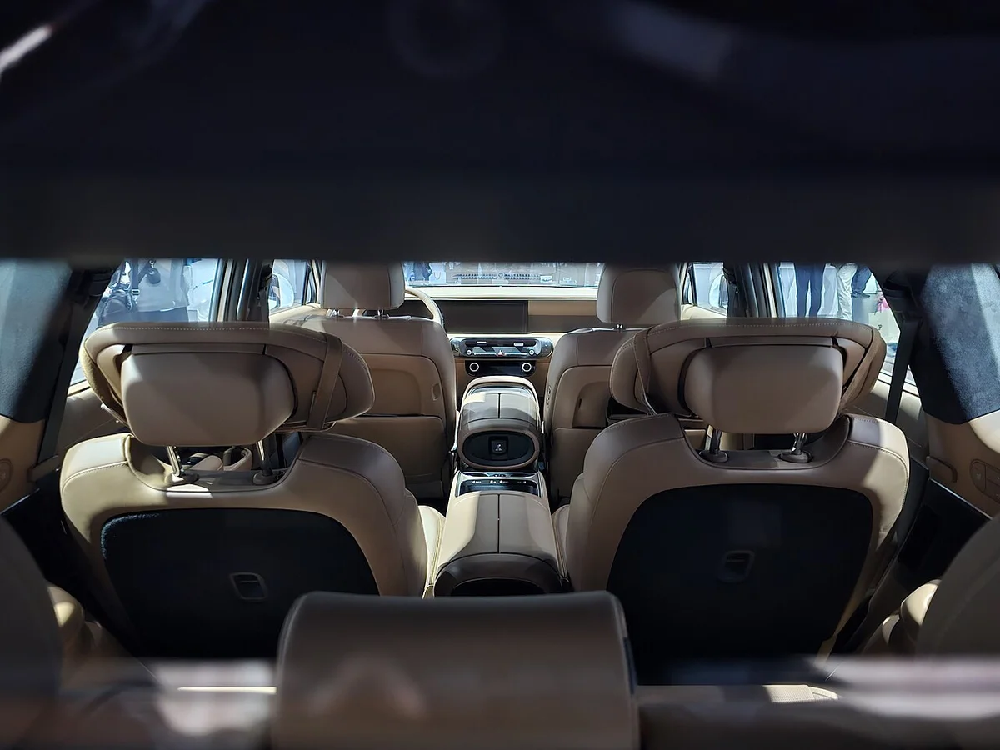
▲ 팰리세이드 하이루프 실내 시트 배열. 같은 전시차를 실내에서 촬영한 것으로 파일 설명에 파워트레인 표기는 없다(2025년 4월) ⓒ Damian B Oh / Wikimedia Commons (CC BY-SA 4.0)
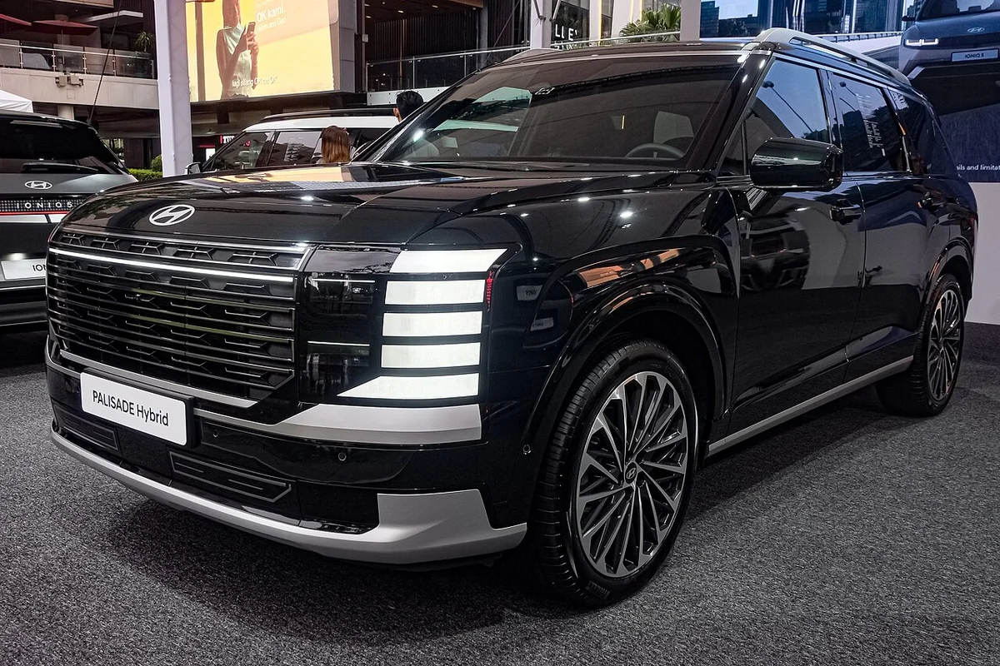
▲ 전시 중인 팰리세이드 하이브리드 캘리그래피(파일 설명 기준, 2025년 9월 촬영) ⓒ Ethan Llamas / Wikimedia Commons (CC BY-SA 4.0)
카프리즘 시선
이번 수상에서 구매자에게 닿는 숫자는 334PS가 아니라 구성별 연비 차이다. 같은 하이브리드인데 18인치 2WD는 14.1km/L, 21인치 AWD는 11.4km/L로 19.1% 낮고 연료비는 연 42.8만 원 벌어진다. 가격 쪽에서는 7인승 익스클루시브에 HTRAC을 더하면 세제혜택이 빠져 실질 차액이 240만 원이 아니라 340만 원으로 커진다.
상을 받은 것은 파워트레인이고, 어떤 휠·구동·트림으로 사느냐에 따라 같은 파워트레인의 체감 비용이 달라진다. 올해 10개 중 6개가 하이브리드·플러그인이라는 목록 구성이 소비자 선호의 이동을 뜻하는지는 이 기사의 자료로 판단하지 않는다.
7. 아쉬운 점·주의할 점 — 상이 말해 주지 않는 것
이 상은 파워트레인 평가이며 차량 전체의 만족도·내구성·실연비를 보증하지 않는다. 계약 전에 따로 따져 볼 항목을 정리한다.
- 미국 판매 모델 기준: 워즈오토 후보는 미국에서 팔리는 파워트레인이다. 국내 사양과 같은 출력·튜닝인지는 이번에 비교하지 못했고, 이 글의 제원은 모두 국내 현대차 카탈로그 수치다.
- 실연비는 별개: 시승기 15편 종합에서 고속 급가속을 이어가면 효율이 공인에 못 미칠 수 있다는 언급(에너지경제·TTAC)이 있었다. 워즈오토도 실측 효율을 보지만 국내 도로 조건과는 다르다.
- 핸들링은 엇갈린 평가: 같은 종합 기사에서 핸들링은 지적 5편, 칭찬 4편이었다. 파워트레인 상이 이 항목을 대신하지 않는다.
- 무게: 하이브리드는 같은 조건의 가솔린보다 95kg 무겁다. 견인 한도는 국내 기준을 확인하지 못했다. 현대차 미국법인은 미국 사양 하이브리드의 견인 능력을 4,000lb(약 1,814kg)로 발표했는데, 같은 발표의 3.5ℓ V6 가솔린은 5,000lb여서 미국에서는 하이브리드가 낮다. 국내 가솔린은 2.5 터보라 이 비교를 그대로 옮길 수 없으니 견인이 필요하면 견적 전에 현대차에 확인해야 한다.
- 추가금: 가솔린 대비 530만~599만 원을 연료비로 회수하는 기간은 연 주행거리에 크게 좌우된다. 수상 사실이 이 계산을 바꾸지 않는다.
- 수상 건수 표현: "20번째"는 현대차그룹 집계이고 같은 해 복수 수상을 각각 센 값이다. 건수는 위키백과의 워즈오토 목록과 맞지만 워즈오토 공식 누적 표와는 직접 대조하지 못했다.
계약 전 확인할 3가지 ① 원하는 휠·구동 조합의 공인 복합연비(14.1은 2WD 18인치 한 구성) ② 익스클루시브에 HTRAC을 넣을 경우 세제혜택 적용 여부를 견적서에서 직접 확인 ③ 7인승과 9인승의 가격 차이 163만~315만 원이 사양 차이로 납득되는지.
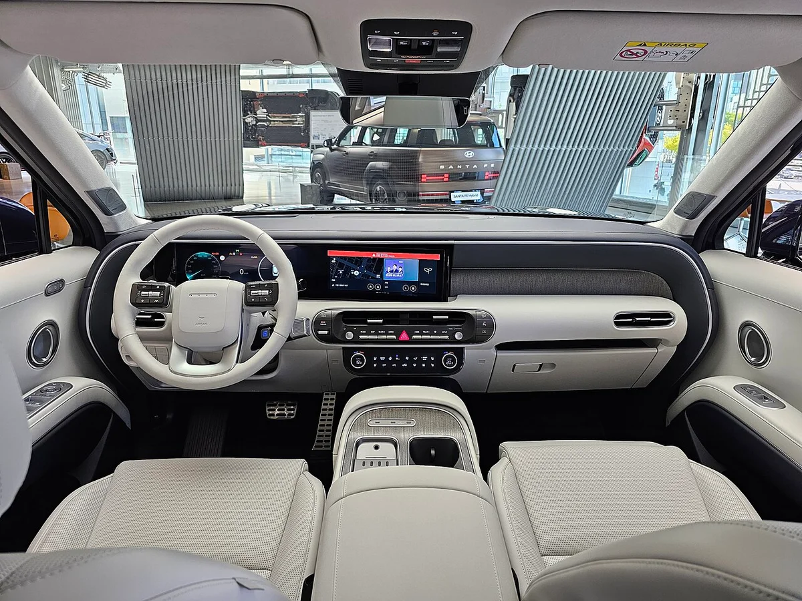
▲ 팰리세이드 하이브리드 프레스티지 실내(파일 설명상 미디엄 그레이·라이트 그레이, 2025년 10월 현대 모터스튜디오 촬영) ⓒ Damian B Oh / Wikimedia Commons (CC BY-SA 4.0)
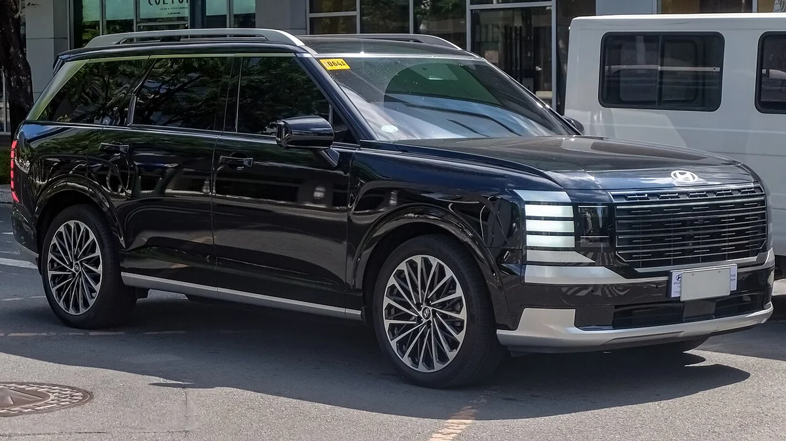
▲ 팰리세이드 하이브리드 앞쪽 측면(파일 설명상 캘리그래피 어비스 블랙, 2026년 5월 촬영) ⓒ Ethan Llamas / Wikimedia Commons (CC BY-SA 4.0)
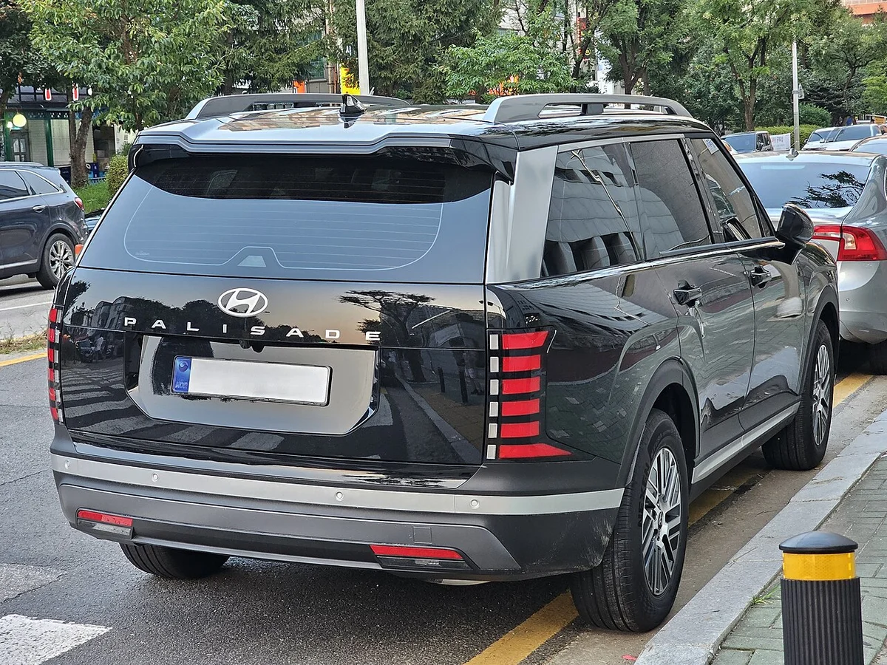
▲ 팰리세이드 하이브리드 익스클루시브 후면(2025년 8월 촬영, 번호판은 원본에서 가려져 있다) ⓒ Damian B Oh / Wikimedia Commons (CC BY-SA 4.0)
8. 이 글이 확인하지 못한 것과 출처 정리
- 날짜: 모터그래프 기사는 10월 23일 입력이고 본문에 "15일(목)"이라고 적었다. 워즈오토 발표(10월 13일)와 현대차 국내 발표(10월 15일)를 각각 확인해 이 글은 두 날짜를 구분해 썼다.
- 다른 9개 수상작의 세부 제원: 워즈오토 원문은 파워트레인 구성만 나열하고 개별 평가 코멘트를 싣지 않았다. 심사위원의 팰리세이드 개별 평도 찾지 못했다.
- 워즈오토 역대 목록: 현대차그룹의 20회 이력은 보도자료 표를 인용하고 위키백과의 워즈오토 목록과 건수·차종을 대조했다. 두 자료의 연도 표기가 2020년까지 어긋나며(본문 3장 참고), 워즈오토 원본 표와는 직접 대조하지 못했다.
- 시스템 토크·배터리 출력: 국내 카탈로그에 없다. 미국법인 발표의 합산 339lb-ft(약 46.9kgf·m 환산)만 참고로 적었고 배터리 출력(kW)은 확인하지 못했다.
- 가격표 기준: 현대닷컴 가격 페이지 본문은 열람이 되지 않아 같은 사이트가 공개한 2027 팰리세이드 하이브리드 가격표 PDF를 읽었고, 10월 23일에 내려받은 시점의 값이다.
📎 참고 출처
- 모터그래프, 「현대 팰리세이드 하이브리드, 워즈오토 10대 엔진 및 동력 시스템 수상」(2026년 10월 23일) 기사 바로가기
- 오토뷰, 팰리세이드 하이브리드 워즈오토 수상 보도(2026년 10월 15일) 기사 바로가기
- 워즈오토, 2026 10대 엔진 및 동력 시스템 발표(2026년 10월 13일), 카프로 정리(2026년 10월 21일)
- 현대차그룹 보도자료(2024년 9월 10일, 2025년 9월 28일): 누적 수상 이력
- 현대자동차 팰리세이드 카탈로그 PDF·2027 팰리세이드 하이브리드 가격표 PDF
- 현대차 미국법인 2026 팰리세이드 발표(합산 339lb-ft, 견인 4,000lb), 위키백과 Ward's 10 Best Engines(연도 대조)
9. 요약
팰리세이드 하이브리드의 2.5ℓ 터보 하이브리드가 2026 워즈오토 10대 엔진 및 동력 시스템에 선정됐다(워즈오토 10월 13일, 현대차 10월 15일 발표). 26개 후보 중 10개가 뽑혔고 전기차 4·하이브리드 4·플러그인 2로 내연기관 단독은 없었다. 현대차그룹 수상은 누적 20번째이며 2022~2025년 전기차 4년 연속 이후 5년 만의 비전기 수상이다.
공식 제원은 시스템 최고출력 334PS(엔진 262PS+모터 54.0kW)로 가솔린 281PS보다 53PS 높고 95kg 무겁다. 복합연비 14.1km/L는 2WD 18인치 한 구성이며 21인치 AWD는 11.4km/L로 연료비가 연 약 42.8만 원 더 든다(카프리즘 계산).
2027 하이브리드는 9인승 익스클루시브 5,077만 원, 7인승 5,240만 원(세제혜택 후 5,140만 원)부터 하이루프 7인승 8,159만 원까지다. 익스클루시브에 HTRAC을 고르면 세제혜택이 적용되지 않는다고 가격표에 적혀 있어 7인승 실질 차액이 340만 원이 된다. 상은 파워트레인 평가이므로 연비 구성·가격·핸들링은 따로 확인하자.
📚 함께 읽으면 좋은 글